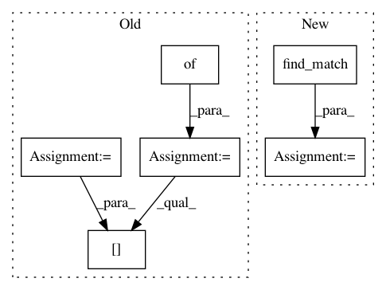

2057691205de3b357a0b4d743977516b50963d28,torchtext/experimental/datasets/raw/udpos.py,,UDPOS,#Any#Any#Any#,46
Before Change
dataset_tar = download_from_url(URL, root=root, hash_value=MD5, hash_type="md5")
extracted_files = extract_archive(dataset_tar)
data_filenames = {
"train": _construct_filepath(extracted_files, "train.txt"),
"valid": _construct_filepath(extracted_files, "dev.txt"),
"test": _construct_filepath(extracted_files, "test.txt")
}
return [RawTextIterableDataset("UDPOS", NUM_LINES[item],
_create_data_from_iob(data_filenames[item]), offset=offset)
if data_filenames[item] is not None else None for item in split]
After Change
if item == "valid":
path = find_match("dev.txt", extracted_files)
else:
path = find_match(item + ".txt", extracted_files)
datasets.append(RawTextIterableDataset("UDPOS", NUM_LINES[item],
_create_data_from_iob(path), offset=offset))
return datasets
In pattern: SUPERPATTERN
Frequency: 3
Non-data size: 6
Instances
Project Name: pytorch/text
Commit Name: 2057691205de3b357a0b4d743977516b50963d28
Time: 2021-02-18
Author: cpuhrsch@fb.com
File Name: torchtext/experimental/datasets/raw/udpos.py
Class Name:
Method Name: UDPOS
Project Name: pytorch/text
Commit Name: 2057691205de3b357a0b4d743977516b50963d28
Time: 2021-02-18
Author: cpuhrsch@fb.com
File Name: torchtext/experimental/datasets/raw/conll2000chunking.py
Class Name:
Method Name: CoNLL2000Chunking
Project Name: pytorch/text
Commit Name: 91ffb6dab23998b2ef20ada4f10032d502ef42bf
Time: 2021-02-17
Author: cpuhrsch@fb.com
File Name: torchtext/experimental/datasets/raw/language_modeling.py
Class Name:
Method Name: _setup_datasets